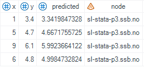

Kjøre R på sl-stata-p4 fra SAS
Susie Jentoft, Øyvind Bruer-Skarsbø, Anna-Karin Mevik, Anita Cecilie Dal
2023-11-02
kjre-r-p-sl-stata-p3-fra-sas.RmdAv og til har vi behov for å kjøre et R-script fra SAS. Vanligvis fordi det kun er en liten del av en stor produksjonsprosess og det er en fordel å kjøre alt innenfor ett miljø (SAS-EG). Per i dag har vi forskjellige versjoner av R på de forskjellige serverne. Det kan være en fordel å kjøre scriptet på en nyere R-versjon på sl-stata-p4 fra et SAS prosjekt.
Foreløpig fungerer dette kun med kjøring på sl-stata-p4 og ikke python server
Her viser vi et eksempel på hvordan du kan gjøre dette.
1. SAS macro
Det er laget en (felles) SAS-makro alle kan benytte som ligger tilgjengelig på Linux. Makroen heter %RunScriptFromR og er dokumentert på SSB sin SAS-wiki (https://statistics-norway.atlassian.net/wiki/spaces/SASDOC/pages/3768288266/Nyttige+SAS+program) og i prodsonen (Q:\Saskurs\Fellesprog\RunScriptFromR.docx). Makroen tilbyr kjøring av skript med og uten parametere og håndtering av loggfil fra R-kjøringen. Se dokumentasjon for nærmere beskrivelse.
En forenklet utgave av makroen er vist under hvis man ønsker å
definere den selv i SAS. Eksempel på bruk:
Kopier følgende inn i prosjektet ditt for å definere macroen.
%macro RunScriptFromR(program='', server="sl-stata-p4",param="");
%let server2 = %sysfunc(dequote(&server.));
%let program2 = %sysfunc(dequote(&program.));
%let args = %sysfunc(dequote(¶m.));
filename CliCmnd PIPE "export LC_ALL=en_US.UTF-8;
ssh -o 'StrictHostKeyChecking no' $USER@&server2. 'Rscript &program2. &args. '";
DATA kjoring_logg;
INFILE CliCmnd encoding='utf-8';
LENGTH stdout $ 1500.;
INPUT stdout $ char500.;
RUN;
%mend RunScriptFromR;2. Lag R-scriptet og gjør det tilgjengelig
Først må du skrive ferdig R-scriptet og gjøre det tilgjengelig for deg og de som skal kjøre programmet. Det er mulig å sende med parametere til kallet (param=’’), men det er ikke påkrevet.
Her er et eksempel på et R-script som leser inn data og kjører en
regresjon. Den lagrer de predikterte verdiene i tillegg til å lagre
informasjon om hvilken server det kjøres på (nodename). Til slutt lagres
data som en .csv. Vi kaller scriptet: run_test.R.
# Les inn data
dt <- read.csv("~/sas_test/testdata.csv")
# Fit model and show node name
fit <- lm(y~x, data = dt)
dt$predicted <- fit$fitted.values
dt$node <- Sys.info()["nodename"]
# Save
write.csv(dt, file ="~/sas_test/testdata_output.csv",
row.names = F)For å ta imot parametre i R-skriptet trenger man denne kodesnutten:
args <- commandArgs(trailingOnly = TRUE)
aar <- as.numeric(args[1]) # Konverterer det første argumentet til numerisk verdi3. Kjøre R-scriptet fra SAS
Til slutt kjører vi macroen i SAS.Her er et eksempel på å lage testdata som en csv og lagre det som en csv.
DATA testdata;
INPUT x y;
DATALINES;
1 3.4
5 4.7
9 6.1
6 4.8
;
PROC EXPORT data=testdata
outfile="~/sas_test/testdata.csv"
dbms=csv
replace;
RUN;Deretter kjører vi R-scriptet ved å kjøre macro og spesifiserer hvor R-script ligger (det er også mulig å kjøre til egen spesifisert logg om man ønsker det):
Og så kan vi se på data som ble lagret fra scriptet i SAS ved å lese inn data:
Da ser vi at data har nå en variabel for predikterte verdiene og en variabel som viser at den har kjørt på sl-stata-p4 serveren.
